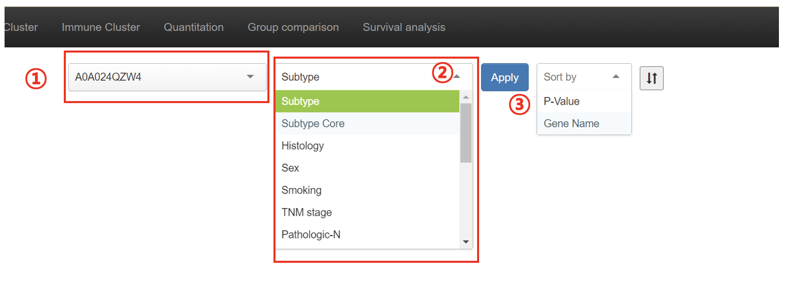
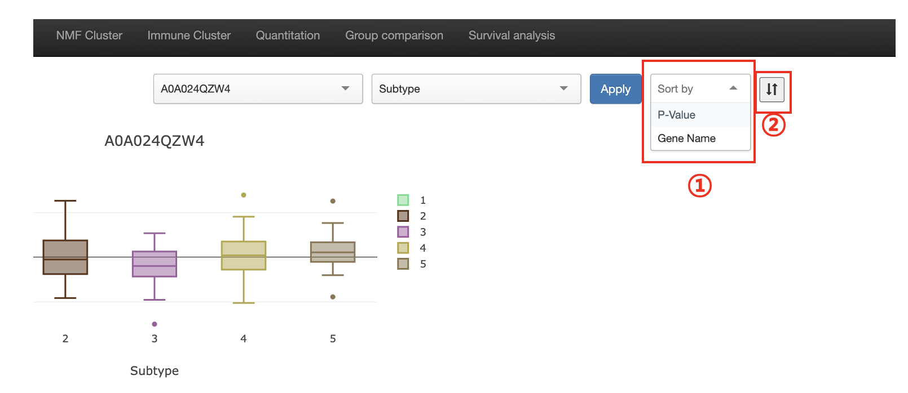
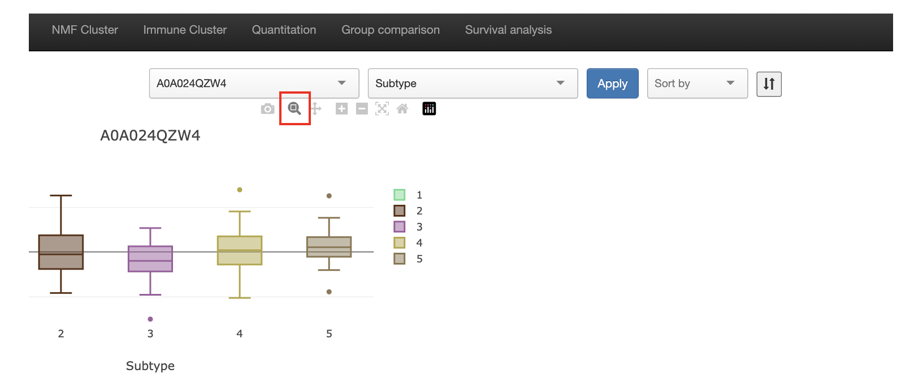
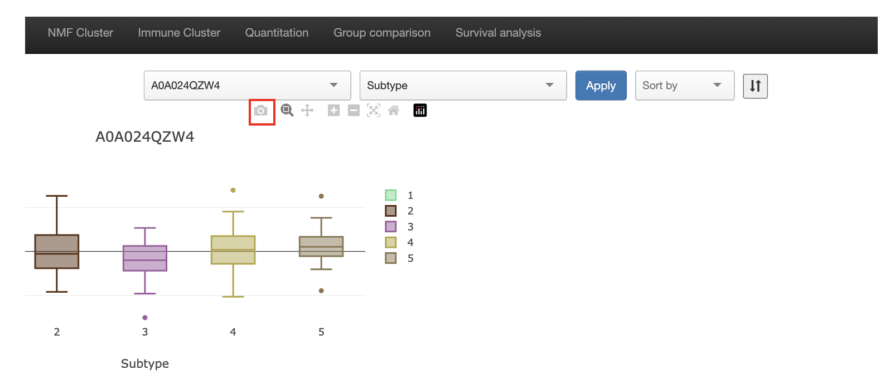

You can choose the target in the ①. After choosing the target to compare, please choose the meta information in the ②.
Please choose the 'Apply' button. Finally you are able to compare the target with meta information!
You can sort the results of grouping information by only clicking the 'Sort by' (①). It consists of 'P-Value' and 'Gene Name'.
You can also adjust the ascending/descending order by clicking the ②.
If you click the 'Legend' button, you can get the information of NMF cluster data like below.
If you want to zoom in & out, just cklik the zoom button. You can control the zoom function by clicking the button.
After group comparing, you may want to save the result. Then click the button to save plot as image.
